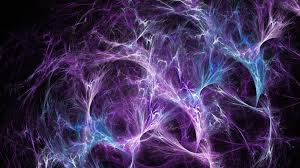

|

Karanlık Madde Nedir?
Karanlık madde, evrende var olduğu düşünülen fakat doğrudan gözlemlenemeyen bir madde türüdür. Işık yaymaz, soğurmaz veya yansıtmaz; bu nedenle
teleskoplarla görülemez. Ancak evrendeki kütle çekim etkilerinden varlığı dolaylı olarak anlaşılır.
Bilim insanları, galaksilerin dönme hızlarını incelediklerinde, görünen maddelerin bu hızları açıklamaya yetmediğini fark etmiştir. Eğer yalnızca
yıldızlar, gezegenler ve gaz bulutları olsaydı, galaksiler mevcut hızlarıyla dağılırdı. Oysa dağılmıyorlar. Bu da görünmeyen, ancak kütle çekimiyle etkili olan karanlık maddenin varlığını düşündürmektedir.
Evrendeki toplam maddenin yaklaşık %85’ini karanlık madde oluşturur; geri kalan çok küçük bir kısmı bildiğimiz “normal madde”dir. Karanlık madde elektromanyetik kuvvetle etkileşime girmediği için ışıkla hiçbir ilişkiye sahip değildir.
Karanlık maddenin ne olduğu hâlâ kesin olarak bilinmemektedir. Bazı teorilere göre, bu madde WIMP (Zayıf Etkileşimli Ağır Parçacıklar) veya aksiyon adı verilen henüz keşfedilmemiş parçacıklardan oluşuyor olabilir.
Özetle, karanlık madde evrenin görünmeyen ama yapısını ve hareketini belirleyen gizli iskeletidir. Galaksilerin bir arada kalmasını sağlar ve evrenin kütle dengesi üzerinde büyük bir etkiye sahiptir.
|